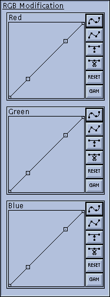
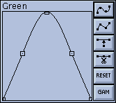
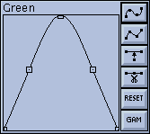
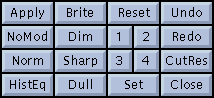

|  | The RGB Modification tool is a collection of
three graph windows, each of which operate on one of the
components of the RGB colorspace. This tool lets you
perform global color-correction on the image by boosting
or cutting the values of one or more of the RGB color
components. You can use this to correct for color screens
that are 'too blue', or for color printers that produce
'brownish' output, or whatever. The graphs work exactly as explained in "The Intensity Graph" . Neat Trick: In addition to color-correction, you can use the RGB modification tool to add color to images that didn't have color to begin with. For instance, you can 'pseudo-color' a greyscale image. |
An example of pseudo-coloring:
 
 
You now have a transformation that will take greyscale images and display them in pseudo-color, using a 'temperature' color scheme. Neato!
|  | These buttons provide general control over the whole xv color editor window. You can display the image with or without color modification, save and recall presets, and undo/redo changes. Also, convenience controls are given for performing some of the most common operations on the Intensity graph. |
It may be helpful to think of xv as maintaining a series of 32 'snapshots' of the HSV and RGB controls. You are normally looking at the last frame in this series. The Undo control moves you backwards in the series.
Of course, you can replace these defaults with your
own. See "Modifying
xv Behavior" for more details.
Keyboard Equivalents: <Meta> 1 , <Meta>
2 , <Meta> 3 , and <Meta> 4